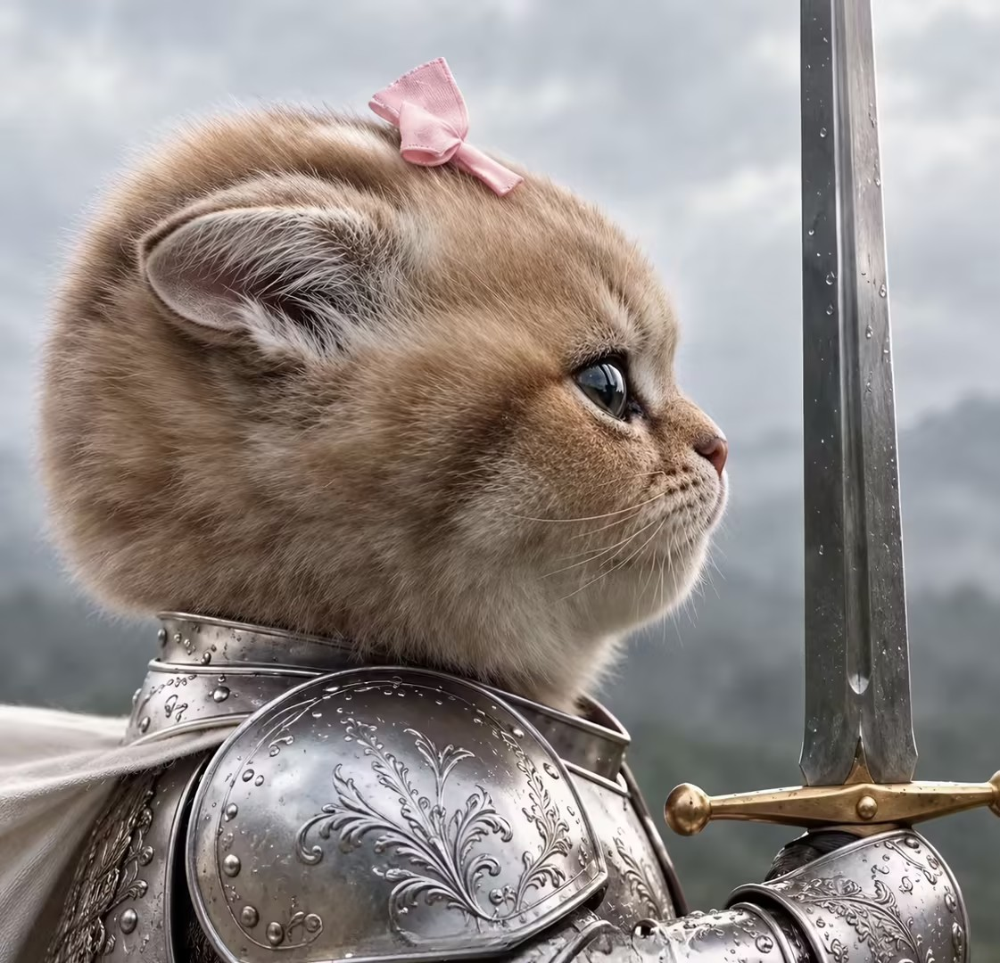
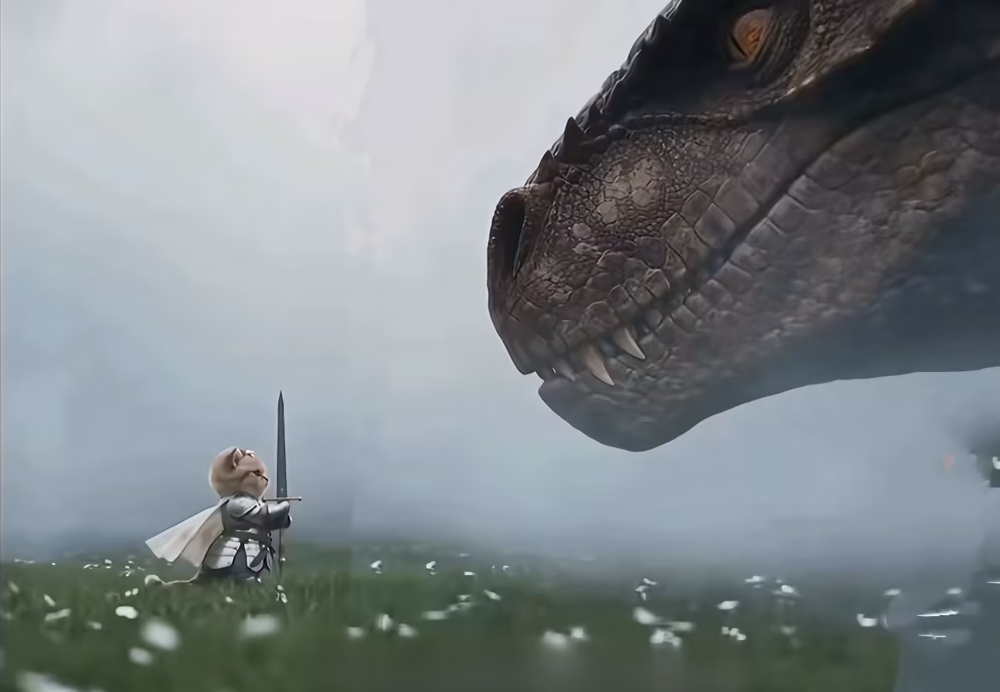
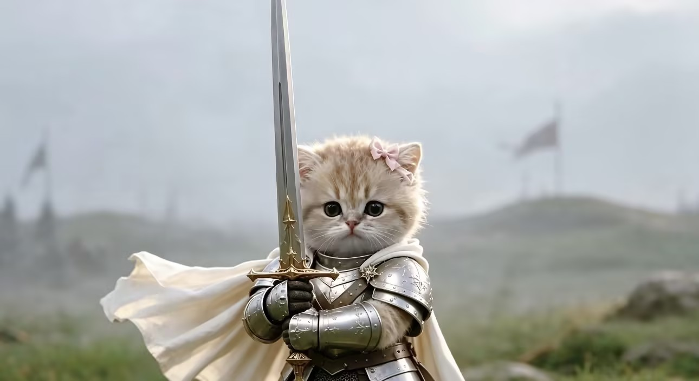

猫咪骑士三部曲 · 纯 CSS 淡入淡出自动轮播 · 零 JavaScript · 张圆圆

粉蝶结下是一双望向战场的眼睛。铠甲淬过雨水，长剑未出鞘——小骑士在暴风雨来临前，静静守望着群山。

身量不及龙的一枚鳞甲，却率先拔剑而立。雾漫草原，花朵无言——勇气从来不问体型大小。

披风扬起，剑指长空。身后是猎猎旌旗，眼前是迷雾中的宿命——小骑士迈出了出征的一步。
@keyframes zyy_fade
animation-delay
zyy_dot